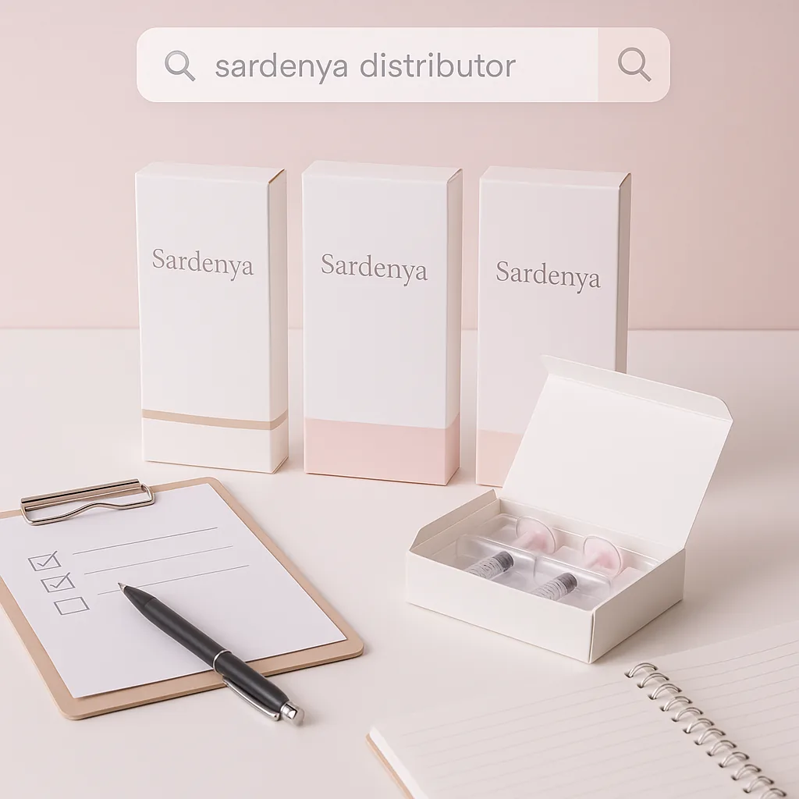
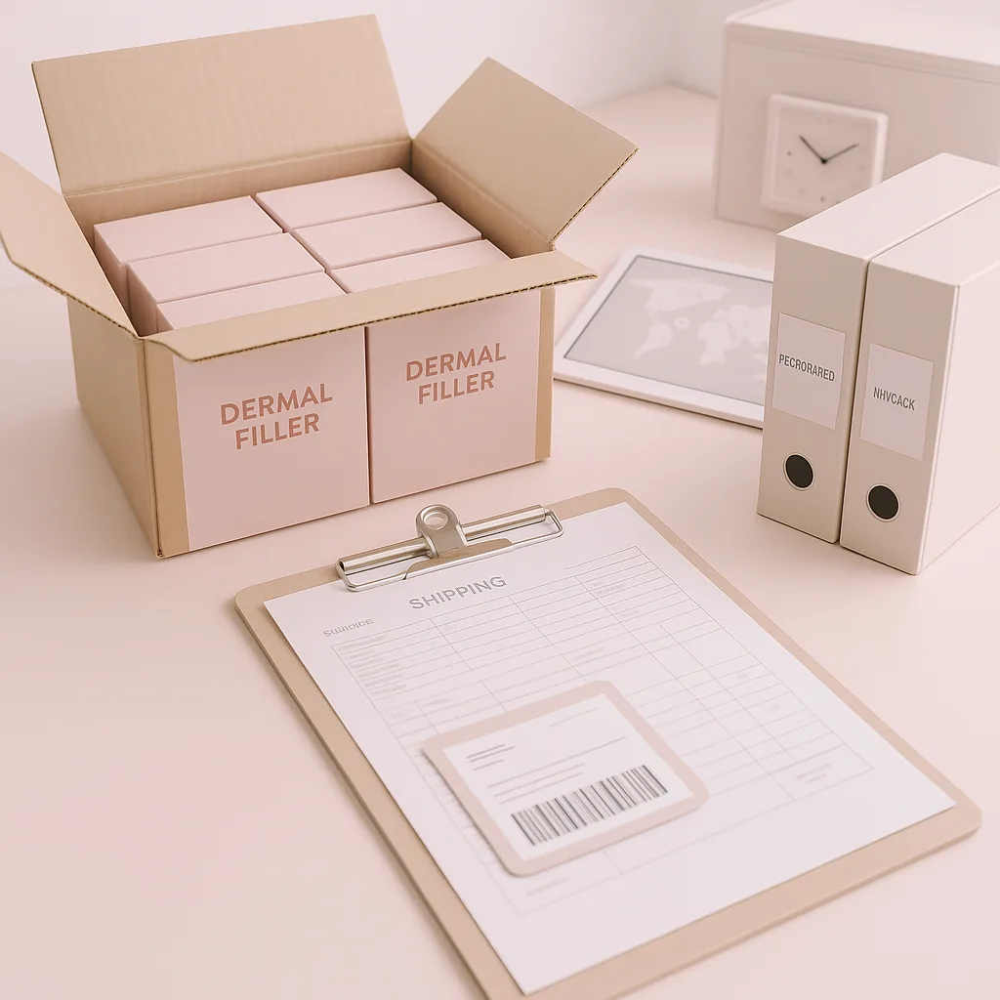

This guide provides valuable insights for clinics, spas, and resellers on sourcing Sardenya dermal fillers, focusing on procurement strategies and logistics.
As a professional buyer in the beauty and wellness industry, sourcing high-quality dermal fillers like Sardenya can be a daunting task. With numerous suppliers and products available, it’s crucial to understand the nuances of procurement to ensure you make the best choices for your business. This guide will help you navigate the complexities of sourcing Sardenya dermal fillers, providing you with the necessary insights to streamline your purchasing process.
Understanding the specific needs of your spa, clinic, or resale business is essential. Whether you are looking for a reliable Sardenya distributor or need guidance on logistics and documentation, this article will equip you with the knowledge to make informed decisions that can enhance your product offerings and ultimately, your bottom line.
Key Takeaways
- Identify reputable Sardenya distributors to ensure product quality and compliance.
- Understand the importance of MOQ (Minimum Order Quantity) for cost-effective purchasing.
- Evaluate packaging options and batch visibility for better inventory management.
- Plan reorder schedules based on sales trends and product shelf life.
- Communicate clearly with suppliers to streamline the quotation and shipping process.
What this guide covers
- Understanding Sardenya dermal fillers
- Identifying relevant buyers
- Comparison criteria for sourcing
- Checklist before requesting a quote
- Logistics: shipping, packing, and documentation
- MOQ, quotation, and reorder planning
- Common buyer FAQs
What buyers should understand first

Sardenya dermal fillers are advanced aesthetic products designed to enhance facial volume and smooth out wrinkles. They are popular in clinics and spas for their effectiveness and versatility. As a buyer, it’s important to recognize that these fillers come in various formulations and packaging options, which can affect their application and storage. Understanding these products, including their composition and intended use, is crucial for making informed purchasing decisions. Additionally, being aware of the regulatory landscape surrounding dermal fillers can help you ensure that your business remains compliant.
Which buyers is this most relevant for?
This guide is particularly relevant for professional buyers in clinics, spas, and resellers who are looking to expand their product offerings with Sardenya dermal fillers. Buyers may have different order planning needs based on their business model. For instance, a high-volume clinic may require a consistent supply of fillers, necessitating a focus on MOQ and reorder planning. Conversely, a reseller may prioritize sourcing flexibility and competitive pricing to meet diverse customer demands. Furthermore, understanding the target market and client preferences can guide buyers in selecting the right products to stock.
How to compare options before ordering
When considering Sardenya dermal fillers, it’s essential to compare various options based on several criteria:
- Product Type: Different formulations may cater to specific aesthetic needs, such as volumizing or wrinkle reduction.
- Brand Reputation: Research the distributor’s reputation to ensure quality and reliability. Look for reviews or testimonials from other buyers.
- Packaging: Evaluate the packaging for safety and ease of use. Consider if the packaging is user-friendly for your staff.
- Batch/Expiry Visibility: Ensure that the supplier provides clear information on batch numbers and expiration dates to manage inventory effectively.
- Supplier Communication: Assess how responsive and informative the supplier is during the inquiry process. Good communication can prevent misunderstandings.
- Destination Requirements: Consider any specific requirements for shipping to your location, including customs regulations and import duties.
Buyer checklist before requesting a quote

- Determine your required quantities and variants of Sardenya fillers based on your business needs.
- Research potential suppliers and their reputations to ensure reliability.
- Prepare documentation for any local regulations or compliance needs, including licenses or permits.
- Check packaging options and ensure they meet your storage capabilities and safety standards.
- Clarify shipping expectations and any associated costs, including potential customs fees.
- Confirm payment terms and conditions with the supplier to avoid surprises.
Shipping, packing and documentation questions
Logistics play a significant role in the procurement process. When ordering Sardenya dermal fillers, consider the following:
- Shipping Methods: Discuss available shipping options with your supplier to find the most suitable for your needs, whether air or sea freight.
- Packing Standards: Ensure that the products are packed securely to prevent damage during transit. Ask about the materials used for packing.
- Documentation: Confirm what documentation is required for customs clearance and compliance, including invoices and certificates of origin.
- Tracking: Ask if tracking information will be provided for your shipment to monitor its progress.
- Insurance: Consider whether shipping insurance is advisable for high-value orders to mitigate potential losses.
MOQ, quotation and reorder planning
Understanding MOQ is vital for effective procurement. Different suppliers may have varying MOQ requirements, which can influence your purchasing strategy. When preparing to request a quote for Sardenya fillers, consider the following:
- Assess your current inventory levels and sales forecasts to determine the right order quantity, ensuring you don’t overstock or run out.
- Identify any specific variants or formulations you require based on customer demand.
- Provide clear destination details to ensure accurate shipping quotes and avoid delays.
- Contact SOLA to confirm current availability and obtain a wholesale quotation tailored to your needs, ensuring you have the best pricing options.
FAQ
What is the typical MOQ for Sardenya dermal fillers?
The MOQ can vary by supplier, so it’s essential to confirm this detail when sourcing to ensure it aligns with your purchasing capabilities.
How can I ensure the quality of Sardenya products?
Research the distributor’s reputation and request documentation that confirms product quality and compliance with industry standards.
What should I do if I have specific shipping requirements?
Discuss your shipping needs with the supplier to ensure they can accommodate your requests, including special handling or expedited shipping options.
How often should I reorder Sardenya fillers?
Reorder frequency should be based on sales trends and inventory turnover rates, ensuring you maintain adequate stock without overcommitting.
Can SOLA assist with my procurement needs?
Yes, SOLA can provide support in sourcing, quotations, and confirming product availability, helping to streamline your procurement process.
Contact SOLA for wholesale quotation via WhatsApp.
Planning a wholesale request?
Send product names, quantities and destination for a tailored discussion.
Contact SOLA on WhatsApp →General educational content for professional buyers. Not medical, legal, regulatory or import advice.